Private LAN Infrastructure: DNS, Load Balancing, HTTPS/TLS, Caching & Packet Analysis
Team Jarvis 07
Vipul Sharma — 2401010505 — Mac 1 (Private DNS)
Utkarsh Jain — 2401020072 — Mac 2 (nginx Edge / TLS)
Anant Jain — 2401010066 — Mac 3 (Backend A)
Krishna Gehlot — 2401010236 — Mac 4 (Backend B / Client / Wireshark)
This project implements a complete multi-machine networking infrastructure on a private LAN using four Apple Macs. The system demonstrates core computer networking concepts including private DNS resolution, reverse proxying with round-robin load balancing, TLS termination with a locally-signed certificate authority, HTTP caching mechanisms, and network packet capture analysis using Wireshark.
The architecture represents a simplified production web infrastructure where client requests traverse multiple network layers — DNS, TCP, TLS, and HTTP — before reaching the application backend, with all communication encrypted and load-balanced.
PRIVATE LAN
|
-----------------------------------------------
| | | |
Mac 1 Mac 2 Mac 3 Mac 4
DNS nginx Backend A Backend B
:53 :443 :3001 :3002
10.7.12.6 10.7.3.73 10.7.26.81 10.7.6.162
(Vipul) (Utkarsh) (Anant) (Krishna)
|
Load Balancer
/ \
/ \
Backend A Backend B
| Machine | Member | Role | IP Address | Port |
|---|---|---|---|---|
| Mac 1 | Vipul Sharma | Private DNS (dnsmasq) | 10.7.12.6 | 53 |
| Mac 2 | Utkarsh Jain | nginx Reverse Proxy / TLS | 10.7.3.73 | 443 |
| Mac 3 | Anant Jain | Backend A (Node.js + Express) | 10.7.26.81 | 3001 |
| Mac 4 | Krishna Gehlot | Backend B + Client + Wireshark | 10.7.6.162 | 3002 |
| Domain | Resolves To | Target |
|---|---|---|
app.team1.test | 10.7.3.73 | nginx (Mac 2) |
api.team1.test | 10.7.3.73 | nginx (Mac 2) |
When a client makes a request to https://app.team1.test/api/status, the following sequence occurs:
10.7.3.73 for app.team1.test.app.crt signed by Team1 Local CA. The client verifies the chain against the trusted ca.crt.GET /api/status is sent inside the TLS tunnel.X-Backend header identifying itself.All four Macs are connected to the same private LAN. Connectivity was verified using ICMP ping between all machines.
ping -c 3 10.7.12.6 # Mac 1 — Vipul ping -c 3 10.7.3.73 # Mac 2 — Utkarsh ping -c 3 10.7.26.81 # Mac 3 — Anant ping -c 3 10.7.6.162 # Mac 4 — Krishna
All pings returned successful replies, confirming Layer 3 (IP) connectivity.
Mac 1 (Vipul — 10.7.12.6) runs dnsmasq as a private DNS server. The configuration maps both custom domains to the nginx proxy:
listen-address=127.0.0.1,10.7.12.6 bind-interfaces no-resolv address=/app.team1.test/10.7.3.73 address=/api.team1.test/10.7.3.73
Client Macs set their DNS to 10.7.12.6 using networksetup -setdnsservers Wi-Fi 10.7.12.6.
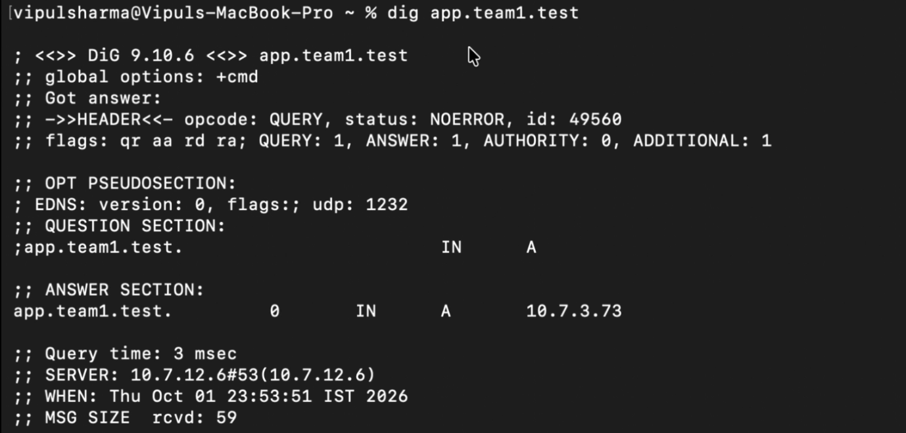
Figure 1: dig app.team1.test — resolves to 10.7.3.73 via DNS server 10.7.12.6
Both backends use the same Node.js + Express server (server.js). The backend name and port are passed as CLI arguments:
node server.js A 3001 # Mac 3 — Anant node server.js B 3002 # Mac 4 — Krishna
The server listens on 0.0.0.0 for LAN accessibility and exposes three endpoints: /, /api/status, and /api/cached. Each response includes an X-Backend header.
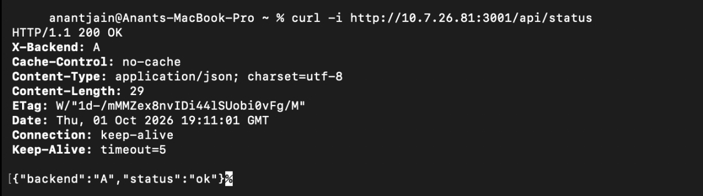
Figure 2: Direct curl -i http://10.7.26.81:3001/api/status from Anant's Mac — X-Backend: A
nginx on Mac 2 (Utkarsh — 10.7.3.73) acts as a reverse proxy with round-robin load balancing:
upstream backends {
server 10.7.26.81:3001 max_fails=1 fail_timeout=10s;
server 10.7.6.162:3002 max_fails=1 fail_timeout=10s;
}
Requests alternate between Backend A and Backend B. The max_fails=1 fail_timeout=10s configuration enables automatic failover when a backend is unreachable.
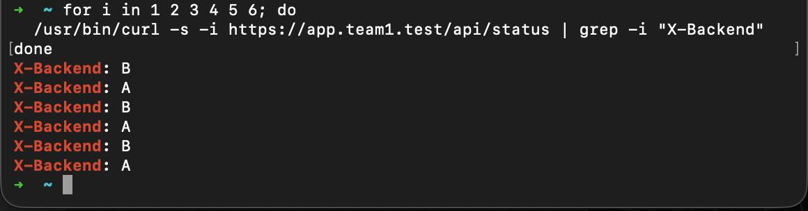
Figure 3: Six consecutive requests showing alternating X-Backend: B, A, B, A, B, A
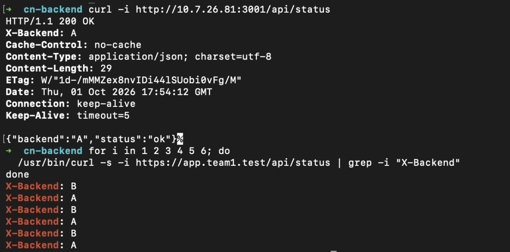
Figure 4: Direct backend access followed by load balancing test
A local Certificate Authority (Team1 Local CA) was created using OpenSSL. The server certificate covers both domains via Subject Alternative Names (SAN):
DNS.1 = app.team1.test DNS.2 = api.team1.test
The CA certificate (ca.crt) was installed on all client Macs using:
sudo security add-trusted-cert -d -r trustRoot \
-k /Library/Keychains/System.keychain ca.crt
HTTPS verification was performed without the -k flag to prove proper certificate trust:
/usr/bin/curl -v https://app.team1.test/api/status
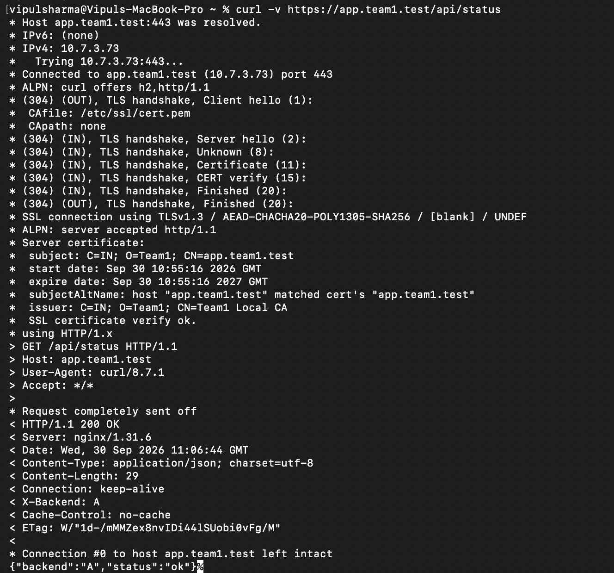
Figure 5: Full verbose curl showing TLS handshake, SSL certificate verify ok, certificate details (CN=app.team1.test, Issuer=Team1 Local CA), and 200 OK response
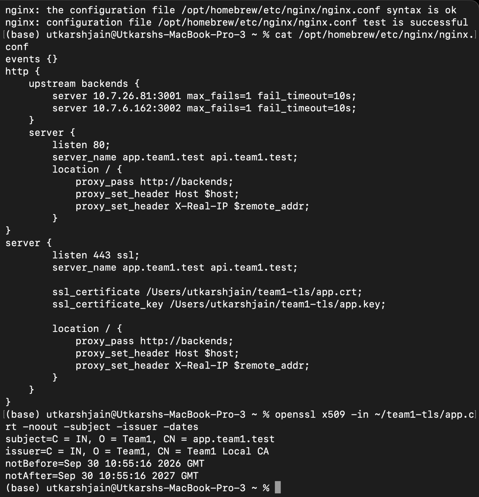
Figure 6: nginx configuration on Utkarsh's Mac with syntax test OK, and openssl x509 showing certificate details
The /api/cached endpoint demonstrates HTTP caching:
Cache-Control: max-age=60 — instructs clients to cache for 60 secondsETag — auto-generated by Express as a fingerprint of the response bodyWhen a client sends If-None-Match with the previously received ETag, the server responds with 304 Not Modified instead of retransmitting the data, saving bandwidth.
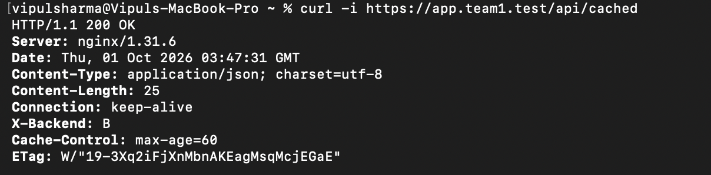
Figure 7: curl -i https://app.team1.test/api/cached — 200 OK with Cache-Control: max-age=60, ETag, X-Backend: B
Packet capture was performed on Mac 4 (Krishna — 10.7.6.162) using Wireshark on interface en0.
To capture a TLS 1.2 session for clearer analysis:
/usr/bin/curl -v --tlsv1.2 --tls-max 1.2 https://app.team1.test/api/status
| Filter | Purpose |
|---|---|
dns | DNS query and response |
tcp.flags.syn==1 && tcp.port==443 | TCP SYN packets for HTTPS connections |
tls.handshake | TLS handshake messages |
tls.record.content_type == 23 | Encrypted application data |
tls && ip.addr == 10.7.3.73 && tcp.port == 443 | Complete TLS session to nginx |
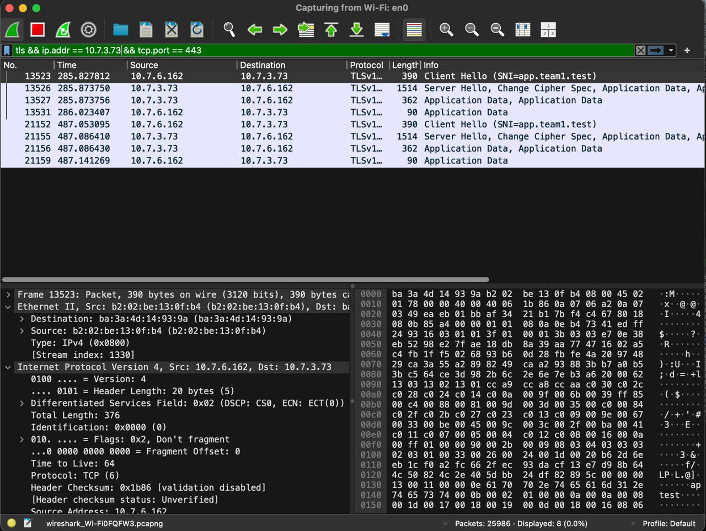
Figure 8: Wireshark filter tls && ip.addr == 10.7.3.73 && tcp.port == 443 — Client Hello (SNI=app.team1.test), Server Hello, Application Data
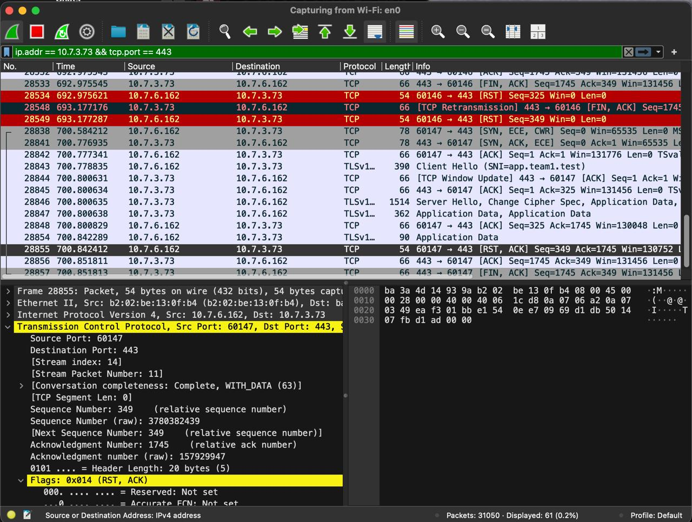
Figure 9: Complete TCP + TLS connection lifecycle showing SYN, Client Hello, Server Hello, Application Data, RST/ACK, FIN/ACK
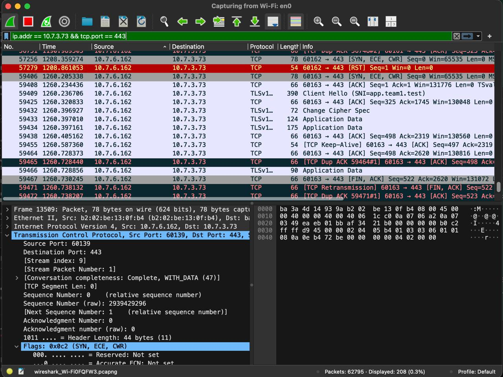
Figure 10: TCP SYN (SYN, ECE, CWR) establishing connection to port 443, followed by TLS handshake with Change Cipher Spec
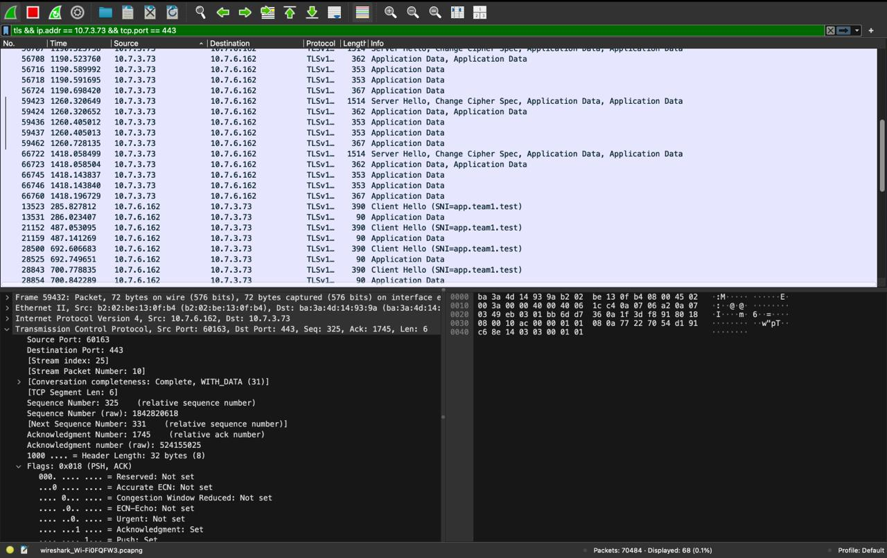
Figure 11: Overview of multiple TLS sessions — Client Hello (SNI=app.team1.test), Server Hello, and encrypted Application Data
Five failure scenarios were demonstrated to prove understanding of the network stack:
| # | Failure Scenario | Broken Layer | Expected Result |
|---|---|---|---|
| 1 | Wrong DNS server (8.8.8.8 instead of 10.7.12.6) | DNS | NXDOMAIN — app.team1.test not resolved |
| 2 | DNS points to wrong IP (10.7.26.81 instead of 10.7.3.73) | DNS → TCP | Connection refused — no nginx on that IP |
| 3 | One backend stopped | Application | nginx failover — all responses from healthy backend |
| 4 | Both backends stopped | Application | 502 Bad Gateway — no upstream available |
| 5 | Wrong HTTPS port (8444 instead of 443) | TCP | Connection refused — nothing listening |
When the client DNS is set to 8.8.8.8 (Google), app.team1.test fails to resolve because it is a private domain. Direct IP access (ping) still works, proving the failure is isolated to the DNS layer.
When app.team1.test resolves to 10.7.26.81 (Mac 3) instead of 10.7.3.73 (Mac 2), DNS resolution succeeds but TCP connection to port 443 fails because Mac 3 does not run nginx.
When Backend A is stopped, nginx detects the failure (via max_fails=1) and routes all traffic to Backend B. All responses show X-Backend: B. When Backend A restarts, normal round-robin resumes after fail_timeout=10s.
When both backends are stopped, nginx returns 502 Bad Gateway. DNS and TLS still work correctly — the failure is isolated between nginx and the upstream servers.
curl https://app.team1.test:8444/ results in connection refused. Port 8444 is not open on Mac 2. ICMP ping to the same host still succeeds, proving the issue is at the transport layer.
This project successfully demonstrates a multi-layer network architecture on a private LAN. The system implements DNS resolution, TCP/TLS connections, reverse proxying with load balancing, HTTP caching, and provides Wireshark evidence of all network protocols in action. The five failure demonstrations prove isolation and understanding of each network layer.
CN Project Phase 1 — Team Jarvis 07
Vipul Sharma (2401010505) · Utkarsh Jain (2401020072) · Anant Jain (2401010066) · Krishna Gehlot (2401010236)